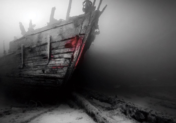

AN ARCHAEOLOGICAL EXPLORATION OF THE BATAVIA WRECK

February 16, 2023

As an archaeologist who has spent years studying the Batavia shipwreck, I have had the privilege of uncovering some of its most closely guarded secrets. In this blog post, I will take you on an extensive journey through time as we explore the fascinating history of the Batavia, what was discovered underwater by archaeologists and what it has revealed about the early European exploration of Australia. Together, we will embark on a scientific voyage through time as we meticulously analyze the findings from the Batavia shipwreck to unravel the mysteries of its history and gain insight into the early European exploration of Australia.